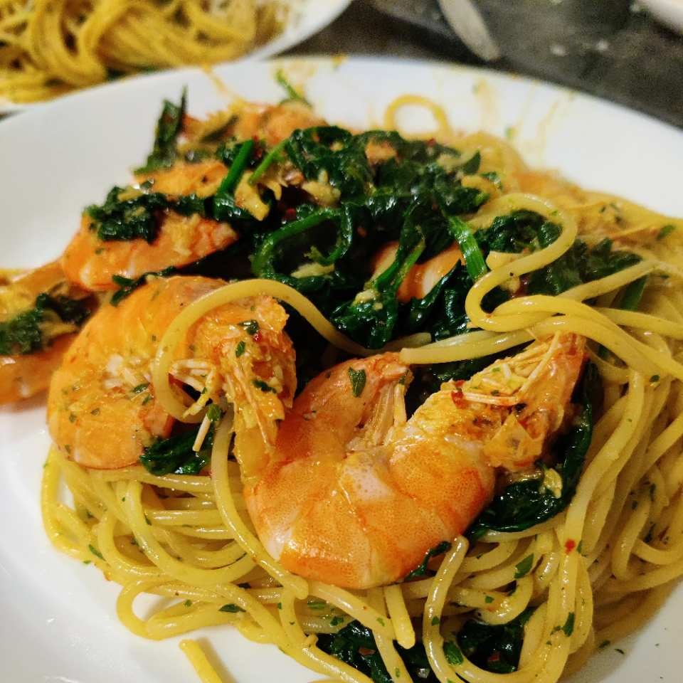

Kims Garnelen Spaghetti
Schnelle Garnelen-Spaghetti mit Knoblauch, Chili und Spinat – ein einfaches Pasta-Rezept direkt aus der Pfanne.

Zutaten
- 1 TL Olivenöl
- 1 Knolle Knoblauch
- 5 Chilis
- 180 g Spaghetti No. 3
- 300 g Spinat (frisch oder gefroren)
- Garnelen (Crevetten/Gambas, frisch oder gefroren)
- Petersilie
Zubereitung
Knoblauch ganz klein schnibbeln.
Chili-Schoten ganz klein schnibbeln und nebenbei Spaghetti aufsetzen.
Knoblauch und Chilis in reichlich Olivenöl anbraten.
Mit Nudelwasser (gut gesalzen) ablöschen.
Blattspinat oder Babyspinat in die Pfanne geben.
Garnelen/Crevetten dazugeben. Wenn es gefrorene sind, die noch ein paar Minuten brauchen, dann ruhig vor dem Spinat dazugeben.
Spaghetti mit in die Pfanne geben und alles gut mischen.
Petersilie darüber geben und vermischen.
Noch ein bisschen Olivenöl darüber verteilen – fertig.